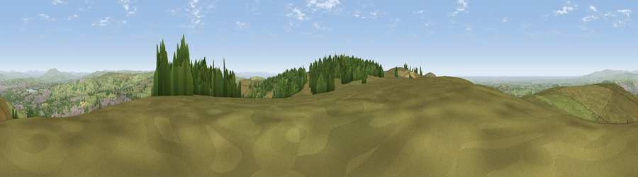

Viewpoint near Darwen
#3806 in England · top 4% of its area beats it · near DarwenThe view, rendered

A 360° render of this exact spot computed from the terrain model, tree cover and land cover — summer colours, afternoon light, calibrated against photographs of famous viewpoints. Real trees, hedges and buildings will differ in detail.
The panorama
Grey silhouette: terrain skyline in each direction (720 bearings, Earth curvature and refraction included). Dashed green: skyline with trees (+15 m) and buildings (+8 m) as obstacles. Blue strip: how far the ground is visible on each bearing.
Where the view opens
Wedge length = distance to the farthest visible ground on that bearing (vegetation-aware). Rings at 10, 25 and 50 km.
What fills the view
66% grassland · 17% built-up · 15% woodland ·
Angular shares of the visible panorama (visual magnitude), not map area. Landscape diversity 0.41 (0–1 Shannon).
Key numbers
More beautiful places nearby
The staircase of upgrades: each row has a higher view potential than everything closer. Driving times are estimates from straight-line distance, calibrated against real road routing — check an actual route before setting out.
| Place | Direction | Drive | Score |
|---|---|---|---|
| Darwen Hill | NNW · 1 km | ~2 min | 80.7 |
| Rivington Pike | SSW · 8 km | ~16 min | 81.9 |
| White Brow | SSW · 9 km | ~17 min | 82.9 |
| Warton Crag | NNW · 55 km | ~77 min | 83.2 |
| Viewpoint near Grange-over-Sands | NNW · 64 km | ~87 min | 83.4 |
| Viewpoint near Cartmel | NNW · 67 km | ~90 min | 87.0 |
| Viewpoint near Cartmel | NNW · 67 km | ~90 min | 87.2 |
| Viewpoint near Finsthwaite | NNW · 74 km | ~97 min | 90.3 |
53.68335, -2.48446 · source: screening · position refined by local search. Computed location — check access rights before visiting.